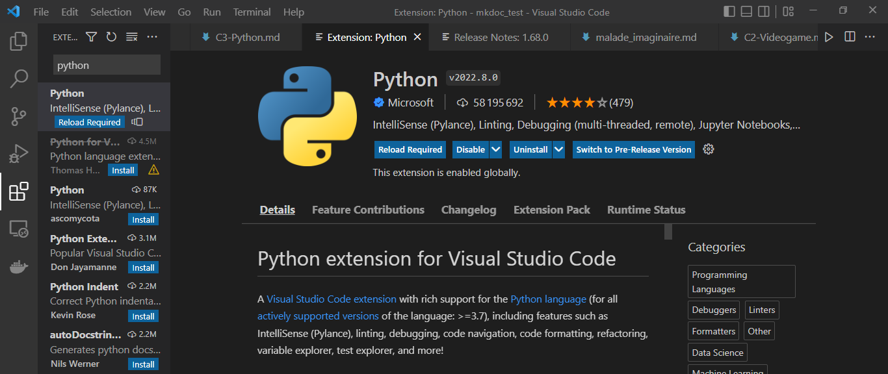
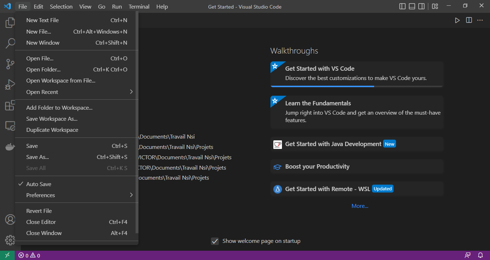
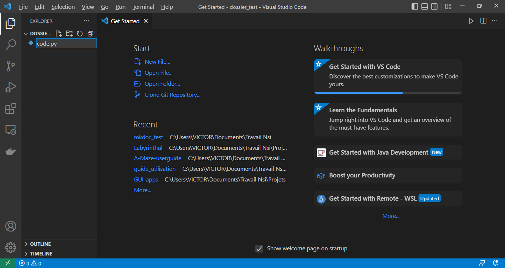

C2 - Programmer en Python
Introduction
Afin de créer des jeux vidéos, il faut savoir programmer. Ce chapitre vous initiera à un langage de programmation facile à prendre en main : Python.
Quote
La programmation n'est pas simplement la rédaction d'instructions pour un ordinateur. Il s'agit d'une façon de penser. Le bon programmeur pense comme un ordinateur. Il sait se mettre à la place de l'ordinateur et peut simuler l'exécution d'un programme étape par étape rien que dans sa tête.
Cependant, si vous êtes déjà à l'aise avec le langage Python, vous pouvez directement passer au prochain chapitre.
Cette page vous donnera quelques bases fondamentales pour programmer en Python. Mais il faut tout de même savoir que la meilleure manière d'apprendre à programmer, c'est la pratique. Nous vous invitons donc à créer un compte et à vous entrainer à la programmation sur le site France IOI avant même de commencer à lire à cette page.
La définition des mots en gras pourra être retrouvée dans le glossaire en bas de page.
1 - Caractéristiques du langage
A. Langage interprété
Python est un langage interprété, c'est-à-dire que votre code est traduit ligne après ligne en langage machine (une suite de 0 et de 1 que l'ordinateur peut comprendre). En opposition à la compilation, où tout votre code est traduit en une seule fois en langage machine. Le problème qui en émerge est le fait que les langages de programmation interprétés sont plus lents que leurs confrères compilés. Toutefois, ils sont plus faciles à déboguer (trouver les bugs et les corriger) que les langages compilés.
B. Riche en modules et librairies
Python possède de nombreuses librairies et modules, qui sont des ensembles d'outils non disponibles initialement (un peu comme des extensions), comme la librairie Pygame qui nous permettra de créer des jeux vidéos.
C. Utilise l'indentation
Ce qui démarque Python de la plupart des autres langages, c'est qu'il exploite l'indentation pour délimiter les différents blocs de code. Alors que d'autres langages comme le C ou le Java utilise des accolades {}, Python utilise des suites d'espaces générés par la touche de tabulation, ce qui le rend plus lisible pour un être humain.
Example
public static void main(String[] args)
{
if (1 + 1 == 2)
{
System.out.println("1 + 1 font 2");
}
else
{
System.out.println("Votre ordinateur est défaillant.");
}
}
def main():
if 1 + 1 == 2:
print("1 + 1 font 2")
else:
print("Votre ordinateur est défaillant.")
Dans cet exemple, on remarque une accumulation d'accolades pour le langage Java afin de savoir à quel bloc il appartient. Ces accolades sont remplacées par des tabulations en Python. Vous remarquez sans doute que nous avons pourtant également utilisé l'indentation pour Java en plus des accolades. Ces indentations n'ont en fait aucun effet sur le code au contraire du langage Python, l'utilisation d'espaces a simplement pour but rendre le code plus lisible.
D. Typage dynamique
Vous n'êtes pas contrait de déclarer le type des variables (des sorte de boîtes qui servent à mémoriser une valeur) que vous créez, au contraire encore une fois du C et du Java. Car les variables peuvent changer de type. Prenons le code suivant qui affiche le contenu d'une variable nommée a :
Example
int a = 42;
a = "La réponse à la question ultime.";
System.out.println(a);
Sortie : error incompatible types String cannot be converted to int
a = 42
a = "La réponse à la question ultime."
print(a)
Sortie : La réponse à la question ultime.
Içi, on crée une variable a et on lui affecte la valeur 42 qui est une valeur numérique entière (type int). Puis on lui affecte une nouvelle valeur qui est cette fois-çi une chaine de caractères (type string). Python n'a aucun problème pour gérer ce cas de figure. En revanche, Java en est incapable, ce qui provoque ainsi une erreur.
2 - Installation
A. Installer Python
Pour pouvoir développer en Python, il va vous falloir un interpréteur Python. Pour cela, direction le site officiel du langage Python puis téléchargez la version la plus récente.
B. Installer Visual Studio code
Vous pouvez programmer depuis votre bloc-notes mais il est plus efficace de programmer depuis un IDE (environnement de développement). Il en existe plusieurs mais nous choisirons VS code, que vous pourrez retrouver et télécharger sur ce site.
C. Installer l'extension Python
Une fois que vous aurez installé et lancé VS code, il est fortement recommandé d'installer l'extension Python. Vous pourrez retrouver et téléchargez différentes extensions dans le barre de navigation gauche de VS code (les quatres petits cubes).

Cliquez sur le bouton "installer" bleu et cela devrait débuter l'installation de l'extension.
D. Créer un nouveau projet
Lorsque vous programmerez, vous travaillerez généralement dans un répertoire (ou dossier). Pour créer un nouveau projet, créez simplement un nouveau répertoire puis ouvrez-le à partir de VS code. Afin d'ouvrir un répertoire, il faut cliquer sur l'onglet "fichier" en haut à gauche, puis cliquez sur l'option "ouvrir un répertoire" dans le menu déroulant (il s'agit de la 5e option depuis le haut).

Vous pourrez ensuite créer des fichiers code source Python (.py) dans lesquels vous écrirez votre code à partir de l'éditeur, et ce très facilement. Il suffit d'aller dans le menu à gauche et cliquer sur l'icône de fichier avec un +. Nommez votre fichier et n'oubliez pas d'ajouter l'extension .py à la fin du nom. Comme montré çi-dessous :

Et cela crée un fichier code source Python dans le répertoire que vous avez ouvert ! Maintenant que nous avons un fichier dans lequel coder, nous pouvons enfin commencer à programmer.
3 - Afficher du texte, variables et exécution
A. Hello world!
Très souvent, la première chose qu'on veut faire lorsqu'on apprend un nouveau langage de programmation, c'est d'afficher le texte "Hello world!". En Python, on affiche du texte grâce à l'instruction print(valeur) en remplaçant valeur par ce que vous souhaitez afficher. Ainsi pour afficher "Hello world!", on écrira :
print("Hello world!")
B. Exécuter son programme
Une fois cette instruction écrite dans votre fichier .py, il ne reste plus qu'à l'exécuter. Sur VS code, un moyen d'exécuter le fichier actuellement édité consiste à cliquer sur l'onglet "Exécuter" situé au même niveau que l'onglet "Fichier" puis de choisir l'option sans débogage. L'ordinateur exécutera ainsi tout ce que vous lui avez ordonné de faire dans votre programme.
Note
Notez que le texte Hello world! est entouré par des guillemets. Les guillemets servent à différencier les chaines de caractères des noms de variables. Nous explorerons la notion de chaine de caractère vers la fin du chapitre.
C. Les variables
Mais qu'est-ce qu'une variable ? Une variable est, pour donner une définition simple, une boîte nommée par un identifiant et qui contient une valeur. Par exemple :
impair = 5
Içi nous avons créé une variable que nous avons nommé impair et à laquelle nous avons affecté le nombre 5.
Attention, le signe = en Python ne symbolise pas une égalité mathématique mais une affectation. Nous verrons comment tester une égalité dans la 5e partie de ce chapitre.
Par conséquent, le contenu d'une variable peut être modifié (d'où le nom 'variable'). De plus, nous pouvons utiliser son nom (alias son identifiant) pour accéder à la valeur qu'elle contient, comme nous pouvons le constater dans l'exemple çi-dessous :
impair = 5
impair = impair - 2
print(impair)
Warning
Attention aux noms que vous donnez à vos variables ! Les espaces, parenthèses, guillemets, les opérateurs + - = % /, et la plupart des caractères qui ne sont pas alphanumériques sont interdits. Vous pouvez mettre des chiffres dans le nom de votre variable tant qu'il ne s'agit pas du caractère situé au tout début du nom.
Tip
Il est recommandé de donner des noms significatifs à vos variables, c'est-à-dire des noms qui illustrent le contenu de la variable. Par exemple une variable qui contient toujours un nombre impair devrait être nommée impair, comme dans l'exemple. Si le nom de votre variable s'écrit sur plusieurs mots, vous pouvez utiliser des underscore _ afin de remplacer les espaces (snake_case). Vous pouvez également employer l'écriture camelCase.
4 - Faire des calculs
A. Addition et soustraction
Dans le dernier programme, nous avons utilisé la soustraction avec impair - 2. En Python, comme dans la quasi-totalité des langages de programmation, il est possible d'effectuer des opérations mathématiques. Nous pouvons par exemple additionner et soustraire des valeurs grâce aux opérateurs + et - :
total = 50
vaches = 11
poules = 23
cochons = total - vaches - poules
mammiferes = vaches + cochons
print(mammiferes)
Le résultat obtenu est \(11 + 50 - 11 - 23 = 27\).
B. Multiplication et division
La multiplication s'effectue avec un astérisque * tandis que la division classique s'effectue avec un slash /.
n = 10
somme_entiers = (n + 1) * n / 2
print(somme_entiers)
Maths
somme_entiers abrite en fait la formule permettant de calculer les n premiers entiers positifs consécutifs : \(\frac{n}{2}(n + 1)\). Par exemple pour calculer \(n = 6\), soit \(1 + 2 + 3 + 4 + 5 + 6\). Il suffit d'appliquer la formule : \(S = \frac{6}{2}(6 + 1)\). Par conséquent, il ne reste plus qu'à simplifier le calcul : \(S = 3 \times 7 = 21\). Et voilà ! Le tour est joué. Plus facile que d'additionner \(1 + 2 + 3 + 4 + 5 + 6\), non ?
C. Division euclidienne et reste
Vous vous rappelez peut-être de l'ancienne division que vous effectuiez en primaire. Celle qui permet d'obtenir un quotient et un reste. Il s'agit de la division euclidienne. Par exemple, \(37 \div 8 = 8 \times 4 + 5\). Içi, le quotient de la division \(37 \div 8\) est 4, tandis que le reste obtenu est 5.
Pour obtenir le quotient d'une division euclidienne en Python, il suffit d'écrire un double slash // entre les deux nombres que l'on souhaite diviser :
position = 37 // 8
print(position)
Quant au reste d'une division euclidienne, il suffit de remplacer le double slash // par un %.
pas = 37 % 8
D. Puissances, racines carrées et modules
Pour élever un nombre à une puissance en Python, il suffit d'écrire nombre ** puissance en remplacant nombre par le nombre que vous souhaitez utiliser et puissance par la puissance à laquelle vous souhaitez l'élever. On utilise donc le double astérisque ** pour élever à une puissance :
a = 4
b = 3
res = (a + b) ** 3
print(res)
Remarquons l'utilisation des parenthèses (a + b), en informatique tout comme en mathématiques, il existe une priorité opératoire. L'utilisation des parenthèses permet de donner une priorité à un groupe d'opérations. Sachant que sont calculés dans l'ordre :
puissances / racines => multiplication / division => addition / soustraction
Pour pouvoir calculer des racines, la méthode sera légèrement différente. Nous aurons besoin d'une fonction appartenant à un module pré-installé : le module math.
Pour pouvoir utiliser le contenu d'un module, il existe différentes techniques. La première, qui est la plus recommandée à utiliser, consiste à importer le module et mentionner le nom du module chaque fois qu'on souhaite accéder à un outil appartenant au module :
import math
nombre_pi = math.pi
print(nombre_pi)
Dans l'exemple çi-dessus, nous avons importé le module grâce à l'instruction import math. Puis nous avons accédé à la valeur \(\pi\) à partir du module math avec l'instruction math.pi. La syntaxe pour utiliser un objet appartenant à un module est donc nom_module.nom_objet.
Le deuxième moyen d'accéder au contenu d'un module est avec le mot-clé from. Celui-çi permet d'accéder directement à une ou plusieurs ressources du module sans avoir à constamment spécifier le nom du module :
from math import sqrt
racine_16 = sqrt(16)
print(racine_16)
Nous venons d'ailleurs tout juste de montrer comment calculer la racine carrée d'un nombre en Python. La fonction sqrt(nombre) en remplaçant nombre par le nombre auquel vous souhaitez calculer la racine carrée.
Info
Il est conventionnel d'écrire les instructions import au tout début de votre programme. N'importez pas des modules en plein milieu de vos programmes !
Nous pouvons également importer l'intégralité du contenu du module en une seule fois grâce au mot-clé from et le caractère joker * :
from math import *
racine_pi = sqrt(pi)
print(racine_pi)
Nous pouvons utiliser sans problème la fonction sqrt et la valeur pi dans ce dernier exemple. Cependant cette méthode n'est pas recommandée car nous importons tout le contenu du module sans savoir précisément ce que l'on importe.
Warning
Importer l'intégralité du contenu d'un module peut provoquer des ambiguïtés. C'est-à-dire que deux fonctions ou deux variables qui ont deux rôles différents risquent de porter le même nom. Par exemple, si vous décidez de créer une variable pi après avoir écrit l'instruction from math import *, alors vous perdrez la valeur initiale de pi importée du module math.
E. Nombres à virgules
En affichant la valeur de math.pi, vous avez peut-être remarqué le . à la suite du 3. Lorsqu'on écrit des nombres en Python, le . est l'équivalent d'une virgule. Ainsi, \(2,5\) s'écrit 2.5 en Python. Les nombres à virgules sont appelés float, nombres flottants en français.
Bug
Il n'est pas efficace de tester des égalités (égalités que l'on étudiera dans la partie suivante) quand on y inclut des nombres flottants. En essayant de calculer 0.1 + 0.2 et sqrt(2) * sqrt(2), vous remarquerez que Python peut fournir des résultats imprévisibles quand il travaille avec des nombres à virgule.
5 - Valeurs booléenes, comparaisons et prises de décisions
A. Les valeurs booléennes
En plus des nombres, il existe un autre type de valeur en informatique : les valeurs booléennes. Il s'agit d'un type ne pouvant prendre que deux valeurs différentes, True ou False. Elles sont notamment utiles pour la prise de décision de l'ordinateur. Pour donner une valeur booléenne à une variable, c'est très simple :
toujours_vrai = True
toujours_faux = False
Nous pouvons même effectuer des opérations sur les valeurs booléennes. Le not permet d'inverser la valeur d'un booléen. not True devient False et not False devient True.
a = True
b = False
print(not a)
print(not b)
Nous pouvons également utiliser l'opération or qui prend deux valeurs booléennes et a pour résultat True si au moins l'une des deux valeurs vaut True.
a = True
b = False
c = b or a
d = c or a
e = False or b
print(a, b, c, d, e)
c vaut True car a est vrai. d vaut True car c est vrai. e vaut False car ni False ni b ne sont vrais.
La dernière opération que nous pouvons utiliser est and. Comme or, and prend deux valeurs booléennes mais a pour résultat True uniquement si ces deux valeurs valent True.
a = True or False
b = False and not True
c = a and True
d = c and b
e = c and d or b
print(a, b, c, d, e)
B. Conditions if
En Python, tout comme dans la plupart des langages de programmation, certaines instructions doivent pouvoir être exécutées sous une certaine condition. C'est le rôle de l'instruction if.
toujours_vrai = True
toujours_faux = False
if toujours_vrai:
print("toujours_vrai est vrai")
if toujours_faux:
print("toujours_faux est vrai")
En exécutant le code çi-dessus, l'ordinateur n'affiche que "toujours_vrai est vrai". Car un bloc d'instructions appartennant à un if n'est pris en compte que si la valeur booléene qui suit son if vaut True.
La syntaxe pour écrire une condition if est donc :
if condition:
#bloc de code
Attention cependant à ne pas oublier les : à la fin de l'instruction if !
Rappel
Rappelons que Python utilise l'indentation pour délimiter les blocs de code. Ainsi, pour marquer la fin et sortir d'un bloc de code, il suffit d'effacer la tabulation. Au contraire, pour ajouter un nouveau bloc (à cause d'un if, d'un for, d'un while ou encore d'un def), il suffit d'ajouter une tabulation.
Nous pouvons évidemment combiner la condition avec les opérations que nous avons étudié à la précédente partie. Par exemple :
a = True
b = True
c = False
if a or c:
print("Au moins 'a' ou 'c' vaut True")
if a and b:
print("'a' et 'b' valent tous les deux True")
if not b and c:
print("L'inverse de 'b' et 'c' valent tous les deux True")
C. Opérations de comparaison
Il est possible de comparer deux valeurs afin d'obtenir un booléen. Il existe six opérations de comparaisons en Python (>, <, >=, <=, ==, !=). Avec == qui teste une égalité entre deux valeurs, et != qui teste une inégalité entre deux valeurs.
Il est possible de comparer deux valeurs numériques. Par exemple :
strictement_superieur = 7 > 5
superieur_ou_egal = 3 >= 3
strictement_inferieur = 10 < 4 * 2
inferieur_ou_egal = -15 <= 12 - 10
egal = 2 + 2 == 22
pas_egal = 0 != 1
print(strictement_superieur)
print(superieur_ou_egal)
print(strictement_inferieur)
print(inferieur_ou_egal)
print(egal)
print(pas_egal)
\(7 > 5\) est vrai donc on obtient True. \(3 >= 3\) est vrai donc on obtient aussi True. Cependant, \(10 < 8\) est faux donc on obtient False. \(-15 <= 2\) est vrai donc on obtient True. \(4 = 22\) est faux donc on obtient False. Enfin, 0 est en effet pas égal à 1 donc on obtient True.
D. L'instruction else et elif
Supposons le cas suivant. Si nous sommes la matin, l'ordinateur devra afficher Bonjour. Si nous ne sommes pas le matin, l'ordinateur devra afficher Bonsoir. Pour faire cela, on pourrait utiliser l'opération not comme çi-dessous :
matin = True
if matin:
print("Bonjour")
if not matin:
print("Bonsoir")
Mais cela est répétitif ! if not matin est exécuté si if matin n'est pas exécuté. En Python on peut remplacer cela avec une instruction else (signifiant 'sinon') à la suite d'une instruction if afin d'exécuter un bloc de code sous condition que le if qui le précède porte une condition fausse. On peut ainsi écrire :
matin = False
if matin:
print("Bonjour")
else:
print("Bonsoir")
Mais supposons maintenant qu'il y ait un troisième cas où l'ordinateur devra afficher "Bonne nuit" à la place, et qu'on utilise un nouveau booléen nuit. On pourrait essayer :
matin = False
nuit = True
if matin :
print("Bonjour")
else:
print("Bonsoir")
if nuit:
print("Bonne nuit")
Cela ne fonctionne pas comme nous l'avions prévu, l'ordinateur affiche deux résultats alors que nous n'en n'attendons qu'un seul ! Le problème dans le programme précédent est que l'instruction if nuit est indépendante de l'instruction if matin, alors que ça ne devrait pas être le cas. Pour rémédier à cela, Python propose le mot-clé elif, diminutif de else if (signifiant sinon si). Corrigeons donc le programme précédent :
matin = False
nuit = True
if matin:
print("Bonjour")
elif nuit:
print("Bonne nuit")
else:
print("Bonsoir")
Si matin est vrai, alors on ignore tout le reste et on affiche Bonjour. Sinon, si nuit est vrai alors on ignore le reste et on affiche Bonne nuit. Dans tous les autres cas, on affichera Bonsoir.
Notez que vous pouvez mettre autant d'instructions elif à la suite d'une instruction if. Cependant else et elif ne sont pas obligatoires pour pouvoir utiliser une instruction if.
Rappelons-nous simplement de la structure suivante :
if condition:
# 1er cas
elif autre_condition:
# 2e cas
elif nouvelle_condition:
# 3e cas
else:
# Tous les autres cas
Vous peut-être déjà remarqué les dièses # dans les programmes proposés. Les dièses permettent d'écrire à leur suite des commentaires. Les commentaires sont des suites de caractères que l'ordinateur ne prend pas en compte. Ils servent simplement aux êtres humains qui lisent le code, pour pouvoir se repérer ou encore préciser le rôle d'une instruction.
Avec les connaissances que vous avez acquises, vous devriez être capable d'écrire un programme qui :
Challenge
- exploite une variable
heurequi devrait être un entier compris entre 1 et 12 - exploite un booléen
apres-midiqui détermine s'il s'agit d'une heure de l'après-midi ou non - Affiche un texte en fonction du moment de la journée obtenu.
- "Good morning" si il est entre 5h et 10h inclus
- "Bon appétit" si il est entre 11h et 13h inclus
- "Good afternoon" si il est entre 14h et 17h inclus
- "Good evening" si il est entre 18h et 20h inclus
- "Sweet dreams" si il est entre 21h et 4h inclus
heure = 3
apres_midi = True
if apres_midi:
heure = heure + 12
if heure < 5 or heure > 20:
print("Sweet dreams")
elif heure <= 10:
print("Good morning")
elif heure < 14:
print("Bon appétit")
elif heure <= 17:
print("Good afternoon")
else:
print("Good evening")
Mais comment savoir que notre programme est correct pour toutes les heures ? Nous verons cela dans la prochaine partie.
6 - Utiliser des listes et répéter des instructions
A. Créer une liste et accéder à un de ses éléments
Supposons que nous souhaitons une variable qui contienne plusieurs valeurs différentes, comment procèderait-on ? Avec des listes, mon cher ami ! Une liste peut contenir aucune valeur, tout comme elle peut en contenir une, deux, trois, douze, cinquante ou même un million. On écrit le contenu d'une liste entre crochets [] et on sépare les valeurs à l'intérieur par des virgules :
liste = [1, 2, 3, 4]
liste_vide = []
liste_carres = [1, 4, 9, 16, 25, 36]
liste_0 = [0] * 100
liste_fusion = liste + liste_carres
Comme nous pouvons le remarquer, nous pouvons également appliquer l'addition et la multiplication sur les listes. L'addition est en fait une opération de concaténation entre deux listes, c'est-à-dire qu'on va fusionner les deux listes en une seule. L'opérateur * peut aussi être utilisé. Il sert à 'répéter' le contenu d'une liste un nombre entier de fois, à concaténer une liste avec une copie d'elle-même un nombre entier de fois. Par exemple, ma_liste * 4 revient à faire ma_liste + ma_liste + ma_liste + ma_liste.
Les listes fonctionnent avec un système d'indices. C'est-à-dire que chaqe valeur dans la liste est numérotée afin de pouvoir l'identifier. A chaque valeur est associée un numéro (communément appelé indice) allant de 0 au nombre d'éléments qu'il y a dans la liste - 1, en accordance avec sa position dans la liste : l'élément le plus à gauche sera numérotée 0, celui à sa droite aura comme indice 1, le suivant 2, et ainsi de suite. On peut donc accéder à une valeur de la liste par son indice grâce à la notation liste[indice]. Supposons une liste d'entiers et que l'on souhaite additionner la première valeur avec la 3e, la 5e ainsi que la dernière :
entiers = [29, 47, 1, 18, -53, 10, 101, 65, -42]
calcul = entiers[0] + entiers[2] + entiers[4] + entiers[-1]
print(calcul)
Warning
Ne jamais oublier que l'ordinateur commence à compter à partir de 0 ! Donc il vous faudra soustraire 1 au nombre auquel vous pensez à chaque fois que vous souhaitez accéder à un élément d'une liste. Le premier élément correspond à 0, le seizième correspond à 15, le centième correspond à 99, etc...
Distinguons la notation entiers[-1]. Celle-ci permet d'accéder au dernier élément d'une liste. Evidemment, on aurait pu aussi écrire entiers[8] dans le dernier exemple, mais et si le dernier élément de la liste est le 3571691e élément ? Il est plus simple d'écrire entiers[-1] En donnant un indice négatif, on accède aux éléments à partir de la droite au lieu de la gauche. Ainsi, entiers[-1] fait référence au dernier élément d'une liste (celui le plus à droite), entiers[-2] fait référence à l'avant-dernier élément, entiers[-3] à celui à sa gauche, et ainsi de suite.
B. Méthodes et fonctions associées aux listes
Pour obtenir la taille d'une liste, on utilise la fonction len, diminutif de length signifiant longueur en anglais. Par exemple len([0, 10, 20, 30]) renvoie 4 car il y a 4 éléments dans la liste passé en paramètre (ou argument).
La fonction min permet d'obtenir la plus petite valeur d'une liste. Par exemple min([18, 31, 10, 19, 22]) renvoie 10.
A l'opposition de la fonction min, la fonction max permet d'obtenir la plus grande valeur d'une liste. Par exemple max([18, 31, 10, 19, 22]) renvoie 31.
Pour calculer facilement la somme de toutes les valeurs à l'intérieur d'une liste, on peut utiliser la fonction sum. Par exemple, sum([18, 31, 10, 19, 22])renvoie 100.
Nous pouvons effectuer un test d'appartenance grâce au mot-clé in. Par exemple, 23 in [19, 87, 45, 23, 12] vaut True car 23 est à l'intérieur de la liste mentionnée. En revanche, 24 in [19, 87, 45, 23, 12] vaut False car il n'y a aucun 24 à l'intérieur de cette même liste.
Nous pouvons ajouter un élément à la fin d'une liste grâce à la méthode nom_liste.append(valeur) en remplaçant nom_liste par le nom que vous avez donné à votre liste, et valeur par l'élément que vous souhaitez ajouter :
factorielles = [1, 2, 6, 24, 120]
factorielles.append(factorielles[-1] * 6)
print(factorielles)
Similairement, nous pouvons supprimer un élément d'une liste grâce la méthode nom_liste.remove(valeur) en remplaçant nom_liste par le nom que vous avez donné à votre liste et valeur par l'élément que vous souhaitez supprimer :
factorielles = [1, 2, 6, 24, 120]
factorielles.remove(6)
print(factorielles)
On peut obtenir l'indice associé à un élément grâce à la méthode nom_liste.index(valeur) en procédant de la même manière que les deux méthodes précédentes :
factorielles = [1, 2, 6, 24, 120]
indice_24 = factorielles.index(24)
print(indice_24)
Enfin, il est possible de supprimer une valeur (tout en ayant l'option de la sauvgarder dans une variable) à partir de son indice grâce à la méthode nom_liste.pop(indice) :
factorielles = [1, 2, 6, 24, 120]
derniere_valeur = factorielles.pop(-1)
print(factorielles)
print(derniere_valeur)
C. Modifier une valeur à l'intérieur d'une liste
Il est possible de modifier une valeur qui est située à l'intérieur d'une liste grâce à l'écriture nom_liste[indice] = nouvelle_valeur en remplaçant nom_liste par le nom que vous avez donné à votre liste, indice par l'indice associée à la valeur que vous souhaitez modifier, et nouvelle_valeur par la nouvelle valeur que doit porter l'élément sélectionné.
prix = [12.99, 14.50, 3.00, 20.30, 8.99]
prix[0] += 3
prix[1] -= 5
prix[2] *= 2
prix[3] /= 2
prix[4] = 7.99
print(prix)
prix. Vous vous demandez peut-être à quoi corresponds les signes +=, -=, *= et /=. Il s'agit d'une affectation particulière. Ces affectations reprennent la valeur initiale de la variable et y effectuent une opération en fonction de l'opérateur (+, -, *, /) écrit. Par exemple :
prix = 10
reduction = 2.5
prix = prix - reduction
print(prix)
Fait strictement la même chose que :
prix = 10
reduction = 2.5
prix -= reduction
print(prix)
C'est le même principe pour les autres opérateurs :
prix = 10
prix = prix + 2
# Signifie strictement la même chose que
prix = 10
prix += 2
prix = 8
prix = prix * 5
# Signifie strictement la même chose que
prix = 8
prix *= 5
prix = 24
prix = prix / 6
# Signifie strictement la même chose que
prix = 24
prix /= 6
Cette technique permet ainsi de simplifier l'écriture.
D. La boucle for
Il peut arriver qu'on veuille répéter la même chose un nombre connu de fois. C'est le rôle de la boucle for. La boucle for traditionnelle en Python s'écrit :
for variable in range(nb_fois):
# bloc de code à répéter nb_fois
Ne pas oublier qu'il faut remplacer nb_fois par un entier représentant le nombre de fois que vous souhaitez répéter le bloc de code à l'intérieur de la boucle. Vous pouvez nommer variable comme vous le souhaitez, tant que le nom n'a pas déjà été pris par une autre variable ou fonction existante. Proposons donc une expérience :
for i in range(10):
print(i)
Nous venons donc utiliser la variable i initialisée par la boucle dans le bloc associé. Attention cependant à ne pas l'utiliser en dehors de celle-çi ! Comme nous pouvons le voir, i commence par prendre la valeur 0, puis elle augmente de 1 jusqu'à ce qu'elle atteigne 9. Cela ne vous rappelle rien ? Mais oui ! La façon dont les éléments d'une liste sont numérotées, bien sûr ! Nous verrons plus bas que les boucles for s'avérent d'ailleurs efficaces pour parcourir une liste permettant donc d'accéder à chacun de ses éléments dans l'ordre et ainsi d'effectuer des mêmes opérations sur ceux-ci.
Autrement, lorsqu'on crée une boucle, nous sommes contraints de spécifier la fin de cette boucle. Mais si nous ne souhaitons pas que la boucle démarre à 0, c'est possible ! Nous pouvons spécifier le valeur initiale de la variable exploitée par la boucle et même le pas effectué (la valeur que l'on ajoute à la variable à la fin de chaque itération) avec la syntaxe suivante :
for variable in range(debut, fin, pas):
# Bloc de code à répéter
Voiçi un cas d'usage qui nous permet d'afficher tous les nombres pairs de 42 à 120 :
for pair in range(42, 120 + 1, 2):
print(pair)
Warning
120 + 1 représente une certaine importance car il rappelle que le nombre de fin d'une boucle est exclu. La boucle for var in range(10): prendra chaque valeur à partir de 0 jusqu'à 10 mais jamais 10 en lui-même !
E. Parcourir une liste
Reprenons le programme qui affiche un texte différent en fonction du moment de la journée :
heure = 3
apres_midi = True
if apres_midi:
heure = heure + 12
if heure < 5 or heure > 20:
print("Sweet dreams")
elif heure <= 10:
print("Good morning")
elif heure < 14:
print("Bon appétit")
elif heure <= 17:
print("Good afternoon")
else:
print("Good evening")
Nous ne testons qu'un seul cas dans l'exemple çi-dessus mais et si nous voulions tester plusieurs cas en une seule fois ? Cela est rendu possible grâce à l'association d'une liste avec une boucle for. Par exemple, si nous souhaitons tester les valeurs :
heures = [3, 10, 7, 1, 5, 12]
apres_midi = [True, False, True, False, True, False]
Les deux listes sont de même longueur, une valeur booléene et une heure sont reliées par le fait qu'ils partagent le même indice dans leur liste respective. Par exemple, heures[2] est une heure de l'après-midi puisque apres_midi[2] vaut True.
Maintenant, il faut effectuer un parcours de liste. Comme les éléments d'une liste sont numérotés par des indices croissants, on peut utiliser une boucle for pour générer chaque indice et ainsi avoir accès à chacun des éléments par leur indice. Ce qui nous permet de tester chaque valeur.
heures = [3, 10, 7, 1, 5, 12]
apres_midi = [True, False, True, False, True, False]
for i in range(len(heures)):
if apres_midi[i]:
heures[i] += 12
if heures[i] < 5 or heures[i] > 20:
print(heures[i], "Sweet dreams")
elif heures[i] <= 10:
print(heures[i], "Good morning")
elif heures[i] < 14:
print(heures[i], "Bon appétit")
elif heures[i] <= 17:
print(heures[i], "Good afternoon")
else:
print(heures[i], "Good evening")
Le programme çi-dessus effectue un parcours par indice, mais nous pouvons également effectuer un parcours par élément :
heures = [15, 10, 19, 1, 17, 12]
for element in heures:
if element < 5 or element > 20:
print(element, "Sweet dreams")
elif element <= 10:
print(element, "Good morning")
elif element < 14:
print(element, "Bon appétit")
elif element <= 17:
print(element, "Good afternoon")
else:
print(element, "Good evening")
Içi, on n'accède pas à des indices mais directement aux éléments d'une liste. Cependant, il y a quelques désavantages, par exemple on perd la possibilité d'accéder à des éléments d'autres listes comme apres_midi. De plus en examinant les deux cas suivants, où nous essayons d'élever au cube chaque nombre de la liste :
cubes = [1, 2, 3, 4, 5, 6, 7, 8]
for i in range(len(cubes)):
cubes[i] = cubes[i] ** 3
print(cubes)
cubes = [1, 2, 3, 4, 5, 6, 7, 8]
for nombre in cubes:
nombre = nombre ** 3
print(cubes)
On remarque que dans le parcours par élément, il est impossible d'utiliser la variable pour modifier directement le contenu de la liste. Elle n'est alors pas du tout modifiée au contraire du parcours par indice qui permet parfaitement de gérer ce genre de cas.
F. Listes par compréhension
Il existe une dernière notion pouvant s'avérer utile lors de la manipulation et notamment lors de la création de listes : les listes par compréhension. Créer des listes par compréhension emploie la boucle for et peut-être aussi l'instruction if d'une manière inhabituelle. Pour maitriser les listes par compréhension, il va vous falloir oublier la syntaxe habituelle des boucles ainsi que des conditions. Mais à quoi servent-elles exactement ces listes par compréhension ? Il s'agit d'un outil assez puissant qui permet de créer en une seule ligne (au lieu des habituelles trois à quatre lignes) une liste avec un contenu qui suit une certaine logique. Assez parlé, voiçi un exemple où l'on emploie une liste par compréhension afin de créer une liste contenant tous les nombres entiers de 0 à 99 :
entiers = [entier for entier in range(100)]
print(entiers)
On peut également combiner cela avec des conditions. Par exemple, pour créer une liste contenant les nombres entiers qui sont à la fois ni divisible par 2 et ni divisible par 3 de 0 à 99, on peut écrire :
diviseurs = [nombre for nombre in range(100) if nombre % 2 != 0 and nombre % 3 != 0]
print(diviseurs)
On peut également créer une liste par compréhension à partir d'une autre liste au lieu d'utiliser le range:
resultats = [29, 2876, 18, 27365, 1762, 67548930, 2873649221, 229, 2737, 205, 27632, 3764, 17]
filtre = [nombre for nombre in resultats if nombre % 2 != 0 and nombre % 3 != 0]
print(filtre)
Les listes par compréhension ne sont pas essentielles mais essayons tout de même de retenir la syntaxe suivante :
liste_comprehension = [nouvelle_variable for nouvelle_variable in container if condition]
if condition étant facultatif et container devant être remplacé par un range ou bien par un objet qui contient plusieurs éléments (comme une liste).
7 - Les boucles tant que
A. La boucle while
Nous avons vu comment créer une boucle qui répéte des instructions un nombre connu de fois. Mais comment faire dans le cas où on ne sait pas exactement combien de fois une instruction doit être répétée ? C'est l'intérêt d'une boucle while. Sa syntaxe est la suivante :
while condition:
# bloc d'instructions à répéter
Une boucle while répéte le bloc à l'intérieur d'elle tant que condition vaut True. Par exemple, nous pouvons diviser un nombre par 2 tant que le résultat obtenu est pairjusqu'à finalement obtenir un nombre impair :
nombre = 2048
nb_operations = 0
while nombre % 2 == 0:
nombre /= 2
nb_operations += 1
print("Nombre impair final obtenu :", nombre)
print("Nombre de divisions nécessaires :", nb_operations)
B. While : à faire et à ne pas faire
Attention cependant à bien faire attention à ce que votre while se termine. En effet, une boucle while peut répéter des instructions à l'infini. Prenons par exemple le cas suivant :
nombre = 17
while nombre != 0:
print(nombre)
nombre -= 2
Ce programme ne s'arrête jamais ! C'est à l'utilisateur de l'arrêter manuellement. En effet, la condition proposé plus haut ne sera jamais fausse, car nombre sera toujours différent de 0. nombre est réduit de 2 à chaque itération. Le nombres que l'on obtient içi appartiennent en fait à la formule \(17 - 2 \times x\). Or, \(17 - 2x = 0\) est impossible à résoudre en sachant que \(x\) est un nombre entier (puisque \(x\) représente le nombre d'opérations qu'il y a eu lieu).
Il faut donc toujours veiller à ce que notre boucle while se termine d'une manière ou d'une autre.
C. Quand while peut remplacer une boucle for
Avez-vous remarqué que :
for indice in range(20):
print("itération", indice)
Signifie plus ou moins la même chose que :
indice = 0
while indice < 20:
print("itération", indice)
indice += 1
Nous pouvons même généraliser que :
for variable in range(debut, fin, pas):
# instructions
Equivaut presque à :
variable = debut
while variable < fin:
# instructions
variable += pas
Nous pouvons donc nous dire que la boucle for ne paraît pas si indispensable finalement. Toutefois for est peut-être plus facile à écrire et à gérer qu'une boucle while, bien que while propose plus d'options et accorde plus de contrôle, nous ne remplaçerons pas une boucle for par une boucle while si une boucle for est adaptée à la situation.
8 - Chaines de caractères
A. Création et caractéristiques
Nous avions bêtement recopié des mots entre guillemets à l'intérieur d'instructions print jusque-là, mais il faut savoir que ces valeurs portent un nom : il s'agit de chaînes de caractères.
Nous avons déjà créé des chaînes de caractères plusieurs fois auparavant, il suffit de mettre entre guillemets une suite de caractères :
nom_utilisateur = "Turing le roi du ring"
mot_de_passe = "ENIGMA"
Les chaînes de caractères sont similaires aux listes dans la mesure où il est possible d'accéder à un caractère d'une chaîne par un indice, et elles possèdent tout comme les listes une longueur ce qui rend possible les parcours de chaines de caractères :
animal = "elephant"
for i in range(len(animal)):
print("Le caractère situé à l'indice", i, "est :", animal[i])
Grosse différence avec les listes cependant, c'est que les caractères à l'intérieur des chaînes de caractères ne sont pas modifiables ! Elles sont dites immutables. Par conséquent, effectuer l'opération chaine[indice] = nouveau_caractere est impossible :
pays_liste = ["I", "r", "a", "n"]
pays_liste[3] = "k" # Possible
pays_chaine = "Iran"
pays_chaine[3] = "k" # Impossible : une erreur se produit
B. Concaténation et format f-string
Cependant, comme pour les listes, il est possible de concaténer deux chaînes de caractères. L'opération * est également disponible :
prénom = "Margaret"
nom = "Hamilton"
complet = prénom + " " + nom
print(complet)
musique = "do"
musique += " ré mi fa so "
musique *= 5
print(musique)
Mais supposons que notre chaine de caractères ait besoin du contenu d'une variable. Il existe un format spécifique pour cela : le format f-string. Pour spécifier que votre chaîne est un f-string, il suffit d'écrire un f avant d'ouvrir les guillemets. Puis d'entourer par des accolades {} les variables que vous souhaitez utiliser :
annee = 1989
inventeur = "Tim Berners-Lee"
invention = "le World Wide Web"
phrase = f"En {annee}, {inventeur} inventa {invention}."
print(phrase)
Et il est plus agréable de lire et d'écrire :
print(f"En {annee}, {inventeur} inventa {invention}.")
Plutôt que :
print("En", annee, inventeur, "inventa", invention, ".")
C. Méthodes associées aux chaines de caractères
Nous l'avons vu auparavant, il est possible d'obtenir la longueur d'une chaîne grâce à la fonction len. len("Abracadabra !") renvoie 13 par exemple (les espaces sont considérés comme des caractères).
Il est possible d'obtenir une chaine de caractères composées uniquement de majuscules à partir d'une chaîne initiale grâce à la méthode chaine_initiale.upper(). Il est aussi possible d'obtenir une chaîne composée uniquement de minuscules d'une façon similaire, avec la méthode chaine_initiale.lower() :
chaine_originale = "ceTtE ChAine EST toUtE DErEGlEe ! IL fauT la RePaRer."
chaine_majuscules = chaine_originale.upper()
chaine_minuscules = chaine_originale.lower()
print(chaine_majuscules)
print(chaine_minuscules)
Nous pouvons également obtenir une liste à partir d'une chaine de caractère grâce à la méthode chaine.split(separateur). La liste renvoyée sera une division de la chaine caractère initiale selon un caractère séparateur separateur. Par exemple, si on souhaite obtenir une liste contenant chaque mot d'une chaine (sachant que les mots sont séparés des espaces), on peut utiliser un espace comme séparateur et écrire :
phrase = "Alan Turing roi du ring a battu George Boole le maboul"
mots = phrase.split(" ")
print(mots)
Sinon, nous pouvons mentionner l'ensemble des méthodes isdigit, isalpha, isalnum, isascii, isupper, islower qui renvoient True si chacun des caractères suivent une règle particulière. Par exemple, chaine.isupper() renvoie True si chacun des caractères sont des majuscules. Comme autre exemple, chaine.isdigit() renvoie True si chacun des caractères sont des chiffres.
chaines = ["0011429382", "ALLO", "pizza", " ", "Coucou ! Moi, c'est Noah le cacatoès."]
for i in range(len(chaines)):
if chaines[i].isdigit():
print(f"'{chaines[i]}' ne possède que des chiffres")
elif chaines[i].isupper():
print(f"Tous les caractères alphabétiques de '{chaines[i]}' sont des majuscules")
elif chaines[i].islower():
print(f"Tous les caractères alphabétiques de '{chaines[i]}' sont des minuscules")
elif chaines[i].isspace():
print(f"'{chaines[i]}' est une suite d'espaces")
else:
print(f"'{chaines[i]}' possède une diversité de caractères importante")
Il existe d'autres méthodes, mais elles sont mineures. De plus, elles sont assez simples à recréer.
D. Convertir une valeur d'un type à l'autre
Il peut arriver qu'on souhaite convertir une chaine de caractère en un entier, et même parfois un entier en une chaîne de caractère. Pour cela, on utilise int(objet) pour convertir objet en un nombre entier, et str(objet) afin de convertir objet en une chaîne de caractère.
chaine = "45"
entier = 201
conversion_chaine = chaine + str(entier)
conversion_entier = entier + int(chaine)
print(conversion_chaine)
print(conversion_entier)
Warning
Attention cependant à ne pas convertir n'importe quoi ! Par exemple, int("girafe") provoquera une erreur.
9 - Fonctions
A. Définition et cas d'usage
Naïvement, nous avons déjà utilisé plusieurs fonctions telles que print ou len. Quand on veut utiliser une fonction, on écrit le nom de la fonction toujours suivi par des parenthèses (). A l'intérieur de ces mêmes parenthèses, il peut y avoir ou non des arguments. Le nombre d'arguments dépend de la fonction utilisée. Par exemple, len prend un seul argument obligatoire, qui doit être une liste, une chaîne de caractères ou tout objet pouvant contenir plusieurs valeurs. Alors que print prend un nombre indéfini d'arguments (sachant que chacun des arguments sont séparés par des virgules).
Mais qu'est-ce qu'une fonction exactement ? En programmation, on pourrait définir une fonction comme une suite d'étapes qui permet de résoudre un problème spécifique. Là où le programme résoud un problème global, les fonctions résolvent chacune un problème mineur précis. Mais c'est chacune de ces fonctions qui permettent de résoudre le problème global ! Un bon programme informatique est en général découpé en plusieurs fonctions, en fait, on pourrait même qualifier les fonctions comme des sous-programmes qui permettent de compléter et d'assister le programme principal.
B. Ecrire une fonction et renvoyer un résultat
Passons à la pratique. Pour créer une nouvelle fonction, on utilise le mot-clé def en respectant la syntaxe suivante :
def nom_fonction():
# instructions
Par exemple, si on veut écrire une fonction qui augmente de 1 la valeur de chaque entier dans une liste :
def augmente_1():
for i in range(len(liste_entiers)):
liste_entiers[i] += 1
liste_entiers = [1, 2, 3, 4, 5]
print(liste_entiers)
En exécutant le programme, on remarque que le bloc défini à l'intérieur de la fonction augmente_1() a été omis. En effet, une fonction n'est pas exécutée si elle n'est pas appelée. On aurait pu mettre n'importe quoi dans la fonction et cela n'aurait rien changé comme par exemple :
def augmente_1():
coucou;
System.out.println("Ceçi n'est pas du java");
liste_entiers = [1, 2, 3, 4, 5]
print(liste_entiers)
Pour appeler une fonction (c'est-à-dire exécuter les instructions à l'intérieur de la fonction), il suffit d'écrire le nom de la fonction suivie de parenthèses () :
def augmente_1():
for i in range(len(liste_entiers)):
liste_entiers[i] += 1
for _ in range(5):
augmente_1()
print(liste_entiers)
Evidemment, nous pouvons appeler et réutiliser une fonction autant de fois que l'on veut, et c'est ça qui les rend pratiques !
Une fonction peut également renvoyer un résultat avec le mot-clé return. Par exemple, une fonction qui renvoie une chaîne de caractères sans voyelles à partir d'une chaine contenue dans la variable chaine_normale :
def sans_voyelles():
new_string = ""
voyelles = "AEOUIYaeouiy"
for i in range(len(chaine_normale)):
if not chaine_normale[i] in voyelles:
new_string += chaine_normale[i]
return new_string
chaine_normale = "Python, un langage de programmation unique en son genre."
chaine_speciale = sans_voyelles()
print(chaine_speciale)
Warning
Quand une fonction renvoie un résultat, ce résultat devrait être stocké dans une variable. Il faudrait donc écrire nom_variable = nom_fonction() plutôt que simplement nom_fonction() lorsque la fonction renvoie une valeur.
Notez également que return marque la fin d'une fonction. Même s'il reste des instructions après le mot-clé return, elles sont ignorées. Par exemple :
def exemple():
if 5 < 10:
print("La fonction va renvoyer True")
return True
print("Cette instruction a été exécutée")
return False
test = exemple()
print(test)
C. Arguments
Ecrire des fonctions telles que nous les avons écrites auparavant est une grave erreur cependant. En effet, nous avons utilisé des variables à l'extérieur de la fonction plutôt que d'utiliser des arguments dans la conception de nos fonctions. Le problème est que cela rend notre fonction peu flexible et peu adaptable. Les arguments s'écrivent à l'intérieur des parenthèses lors de la création et de l'appel des fonctions. Ainsi pour améliorer la fonction augmente_1():
def augmente_1():
for i in range(len(liste_entiers)):
liste_entiers[i] += 1
liste_entiers = [1, 2, 3, 4, 5]
print(liste_entiers)
augmente(n, liste) qui prend en argument la liste qui doit être modifiée et un nombre n qui représente l'augmentation de chaque nombre de la liste au lieu d'utiliser directement des valeurs constantes telles que 1 ou des variales externes à la fonction comme liste_entiers :
def augmente(n, liste):
for i in range(len(liste)):
liste[i] += n
liste_entiers = [1, 2, 3, 4, 5]
autre_liste = [28, 19, 1, 92]
encore_une = [-16, -18, -43, -67]
augmente(n = 1, liste = liste_entiers)
augmente(n = -5, liste = autre_liste)
augmente(n = 20.5, liste = encore_une)
print(liste_entiers)
print(autre_liste)
print(encore_une)
Notons que l'écriture augmente(n = 1, liste = liste_entiers) peut être simplifiée par augmente(1, liste_entiers) lors de l'appel d'une fonction. Nous avons simplement utilisé l'affectation afin de clarifier ce qui se passe (on exécute le bloc contenu dans augmente sachant que n prend comme valeur 1 et liste prend comme valeur liste_entiers, toujours dans le cas précédent).
Warning
Lors de l'appel d'une fonction, les arguments doivent être ordonnés dans l'ordre défini par la définition originale de la fonction associée. Par exemple, pour la fonction augmente(n, liste), augmente(liste_entiers, 1) correspond à augmente(n = liste_entiers, liste = 1) et augmente(1, liste_entiers) correspond à augmente(n = 1, liste = liste_entiers). Ainsi augmente(1, liste_entiers) \(\not ={}\)augmente(liste_entiers, 1). Cependant, si l'ensemble des arguments sont identifiés par une affectation explicite nom_argument = valeur, alors l'ordre n'est plus important, ce qui signifie que augmente(n = 1, liste = liste_entiers) \(=\) augmente(liste = liste_entiers, n = 1).
Tip
Arguments, valeurs par défaut: nous pouvons donner une valeur initiale à un argument lors de la définition de sa fonction. Par exemple : def deplacer(objet, distance=1):. Içi nous donnons une valeur par défaut à l'argument distance, c'est-à-dire que si l'on omet de donner une valeur à distance lors de l'appel de la fonction deplacer, distance prendra automatiquement la valeur 1. Ainsi, deplacer(nuage) fera strictement la même chose que deplacer(objet = nuage, distance = 1) dans ce contexte.
Challenge
En utilisant des arguments, améliorez la fonction sans_voyelles de sorte qu'elle puisse gérer n'importe quelle chaine de caractère et non pas uniquement chaine_normale.
def sans_voyelles(chaine_initiale):
new_string = ""
voyelles = "AEOUIYaeouiy"
for i in range(len(chaine_initiale)):
if not chaine_initiale[i] in voyelles:
new_string += chaine_initiale[i]
return new_string
exemple_1 = sans_voyelles("abracadabra !)
exemple_2 = sans_voyelles("Les fonctions sont essentielles en programmation")
D. Fonctions : attention à la portée !
Tout ce qui a été créé à l'intérieur d'une fonction existe uniquement à l'intérieur de cette fonction. Il n'est plus accessible en dehors. Par conséquent un code comme celui-çi est incorrect :
def mystere(n, ajout=0, retrait=0, coefficient=1, diviseur=1, puissance=1):
somme = n + ajout - retrait
produit = somme * coefficient / diviseur
final = produit ** puissance
mystere(42, retrait=5, puissance=2, coefficient=3)
print(final)
Içi, le programme cherche à afficher la valeur de final. Or, final est situé à l'intérieur de la fonction mystere et n'existe plus à l'extérieur de celle-çi. Une erreur va ainsi se produire.
Une solution possible à ce problème serait de renvoyer final à l'appel de la fonction :
def mystere(n, ajout=0, retrait=0, coefficient=1, diviseur=1, puissance=1):
somme = n + ajout - retrait
produit = somme * coefficient / diviseur
final = produit ** puissance
return final
solution = mystere(42, retrait=5, puissance=2, coefficient=3)
print(solution)
Similairement, il est impossible de modifier depuis l'intérieur d'une fonction une variable qui existe à l'extérieur de celle-ci. Ainsi, le programme suivant provoquera une erreur :
def reinitialisation():
timer = 0
point_de_vies = 25
score = 0
timer = 14
point_de_vies = 18
score = 346
reinitialisation()
N'oublions jamais que, en Python, le rôle d'une fonction n'est pas de modifier une variable existante. C'est assez important d'être conscient de cela lorsqu'on débute en programmation (selon l'expérience du créateur du site).
10 - Gestion de fichiers
A. Ouvrir et lire le contenu d'un fichier
Enfin, dernier aspect que nous aborderons pour ce chapitre : la gestion des fichiers avec Python. Python nous permet facilement d'ouvrir et de lire le contenu d'un fichier (sous forme de texte). Mais avant de donner une quelconque instruction Python, nous devons être sûr de comprendre la notion d'arborescence des fichiers. Pour donner une définition simple, l'arborescence est la structure qui définit la position des fichiers dans un système. Pour trouver un fichier dans une arborescence, nous devons spécifier son chemin. Par exemple C:\Users\VICTOR\Documents\Travail Nsi\mkdoc_test\docs\C3-Python.md est le chemin permettant d'accéder au fichier C3-Python.md. Il y a deux types de chemins. Premièrement, le chemin absolu qui part de la racine (ou l'origine) de l'arborescence, comme le chemin vu plus tôt C:\Users\VICTOR\Documents\Travail Nsi\mkdoc_test\docs\C3-Python.md dont la racine est içi représentée par le C:. Deuxièmement, le chemin relatif qui part du dossier actuellement ouvert. Par exemple, en supposant que nous travaillons sur le dossier mkdoc_test, le chemin relatif pour accéder à C3-Python.md devient alors docs\C3-Python.md.
Nous favoriserons les chemins relatifs au chemins absolus car ils sont plus faciles à écrire. Par ailleurs, vous vous êtes peut-être déjà demandé l'intérêt d'ouvrir un répertoire à partir de VS code comme montré à la partie 2 de ce chapitre. La réponse est simple. Travailler dans un répertoire nous permet de travailler sur tout un ensemble de fichiers en même temps !
A-retenir
Lorsqu'on utilise VS code, tous les chemins relatifs auront pour point de départ le dossier sur lequel vous travaillez
Passons à la programmation. Pour ouvrir et lire le contenu d'un fichier existant (par exemple un fichier que vous avez créé nommé "hello.txt" dans lequel vous avez écrit ce que vous souhaitez), nous pouvons utiliser la fonction open de Python et la méthode read associée aux fichiers :
fichier = open("hello.txt")
contenu_fichier = fichier.read()
fichier.close()
print(contenu_fichier)
Pour obtenir une liste où chacune des lignes du fichier représentent un élément de la liste, on peut utiliser la méthode fichier.readlines():
fichier = open("hello.txt")
lignes_fichier = fichier.readlines()
fichier.close()
print(lignes_fichier)
B. Fichiers : à faire attention
Ne jamais oublier l'instruction fichier.close() à partir du moment où l'on a déjà lu le contenu du fichier. Quand on ouvre un fichier, il faut toujours finir par le fermer. Une alternative à fichier.close() serait d'utiliser le mot-clé with:
fichier = open("hello.txt")
contenu_fichier = fichier.read()
fichier.close()
print(contenu_fichier)
Signifie la même chose que :
with open("hello.txt") as fichier:
contenu_fichier = fichier.read()
print(contenu_fichier)
Avez-vous également remarqué les \n lorsque l'on utilise fichier.readlines() ? \n est un caractère spécial qui signifie un saut de ligne. Ils vont en général être gênant pour votre programme.
Challenge
Essayer de créer une fonction lire_lignes(fichier) alternative à la méthode readlines(), qui prend en argument fichier : le chemin du fichier que vous souhaitez lire. lire_lignes(fichier) doit renvoyer une liste contenant les différentes lignes du fichier passé en argument, mais sans les caractères \n
def lire_lignes(fichier):
liste_finale = [""]
with open(fichier) as fic:
contenu = fic.read()
for char in contenu:
if char == "\n":
liste_finale.append("")
else:
liste_finale[-1] += char
return liste_finale
liste_finale[-1] += char), le contenu du fichier est dans le bon ordre !
Warning
Quand on utilise l'instruction read ou readlines, les valeurs renvoyées seront toujours des chaînes de caractères. C'est à vous de convertir les informations obtenues si nécessaire.
C. Modifier un fichier et créer un nouveau fichier
Il est possible de modifier le contenu d'un fichier grâce au langage Python. Pour cela, il faut ouvrir un fichier en mode écriture et utiliser la méthode fichier.write() :
with open("hello.txt", "w") as fic:
fic.write("Coucou !")
Le "w" dans la fonction open signifie que l'on ouvre notre fichier en mode écriture. Désormais, en ouvrant le fichier hello.txt, vous remarquerez qu'il ne contient qu'une seule chose : "Coucou !".
Warning
L'instruction write écrase le contenu précédent du fichier. Elle efface intégralement le contenu du fichier avant d'écrire dedans. De plus, il est impossible de lire un fichier qui a été ouvert en mode écriture.
Remarquons cependant que write crée un nouveau fichier si le fichier n'existe pas déjà, ce qui peut s'avérer très utile.
Conclusion
Cette page vous a donc servi de rappel ou d'initiation aux principaux concepts du langage Python. Cependant, le meilleur moyen d'apprendre la programmation, c'est en programmant. C'est par la pratique qu'on apprend le mieux la programmation ! Il est donc fortement conseillé de se créer un compte sur le site France IOI et de s'entraîner à la programmation ainsi qu'à la résolution de problèmes sur ce dernier.
Glossaire
programme informatique : suite d'instructions logiques destinées à être exécutées par un ordinateur.
langage de programmation : intermédiaire entre l'humain et l'ordinateur. Permet la rédaction de codes sources.
code source : l'ensemble des programmes rédigés et faits pour être lus par un être humain nécessaire à la production d'un exécutable en langage machine.
exécutable : suite d'instructions écrites en langage machine pouvant être directement exécutées par un ordinateur.
langage machine : langage binaire (des 0 et des 1) compréhensible par l'ordinateur.
compilation : procédé par lequel un code soure est traduit en une seule fois et en son intégralité en langage machine afin de générer un exécutable.
interprétation : procédé par lequel un code soure est traduit ligne après ligne en langage machine afin de générer un exécutable.
déboguer : trouver et corriger les anomalies d'un programme.
int : diminutif de integer, qui signifie nombre entier en anglais.
float : diminutif de floating point number, qui signifie nombre flottant anglais et qui relate aux nombres à virgule.
str : diminutif de string, qui signifie chaîne de caractères en anglais. Une chaîne de caractères est simplement un regroupement de caractères, généralement délimité par des guillemets en programmation.
caractère : un caractère peut être une lettre alphabétique miniscule ou majuscule, un chiffre, une virgule, un point, un emoji, etc. C'est une notion plus ou moins abstraite mais pour donner une définition simple, nous dirons qu'un caractère constitue l'ensemble des éléments qu'un ordinateur peut écrire ou afficher (hors images et couleurs) selon une police et un encodage.
encodage : étant donné que l'ordinateur ne peut manipuler que des valeurs numériques, les caractères doivent être associés à un nombre afin d'être manipulés par l'ordinateur. C'est le rôle de l'encodage de caractères. Celui-ci permet de représenter individuellement chaque caractère parmi une multitude de caractères par un nombre. Aujourd'hui, l'encodage de caractères le plus répandu est UTF-8.
codage RGB : similairement à l'encodage de caractères, l'ordinateur a besoin de valeurs numériques afin de représenter des couleurs. C'est justement le principe du codage RGB (Red Green Blue). Son fonctionnement est simple. Il utilise un triplet de valeurs allant de 0 à 255 afin de décrire une couleur. Chaque valeur représente dans l'ordre : l'intensité du rouge, l'intensité du vert, et l'intensité du bleu (d'où le nom Rouge Vert Bleu).
bit : un seul chiffre binaire (0 ou 1) qui décrit une valeur.
octet : 8 bits qui décrivent une valeur.
variable : un identifiant auquel on associe une valeur, les variables sont utilisées en informatique pour mémoriser et suivre l'évolution d'une information.
fonction : similairement aux fonctions mathématiques, les fonctions peuvent prendre un ou plusieurs arguments. Il s'agit de la définition d'une procédure qui peut ou non renvoyer un résultat. L'intérêt de stocker une suite d'opérations dans une définition de fonction est de pouvoir la réutiliser facilement sans avoir à recopier les même opérations encore et encore.
argument : également appelé paramètre, valeur que l'on écrit généralement entre les parenthèses qui suivent une fonction et qui influence le déroulé d'une fonction et le résultat qu'elle renvoie.
module : fichier contenant des fonctions, variables et objets non disponibles initialement pour un langage de programmation.
librairie : ensemble de modules.
bloc de code : instructions groupées appartenant à une instruction mère (une boucle, une fonction, une condition, etc)
indentation : système de délimitation de blocs de codes qui utilise les espaces et particulièrement la tabulation.
condition : valeur booléene que l'ordinateur exploite pour prendre une décision.
booléen : une valeur booléene est une valeur ne pouvant prendre que deux valeurs (Vrai ou Faux). Le mot vient du mathématicien George Boole, inventeur de l'algèbre du même nom.
concaténation : opération qui rassemble deux valeurs pour les faire fusionner en une valeur de taille plus importante. Exemples : "conca" || "tenation" = concatenation; 29 || 42 = 2942.